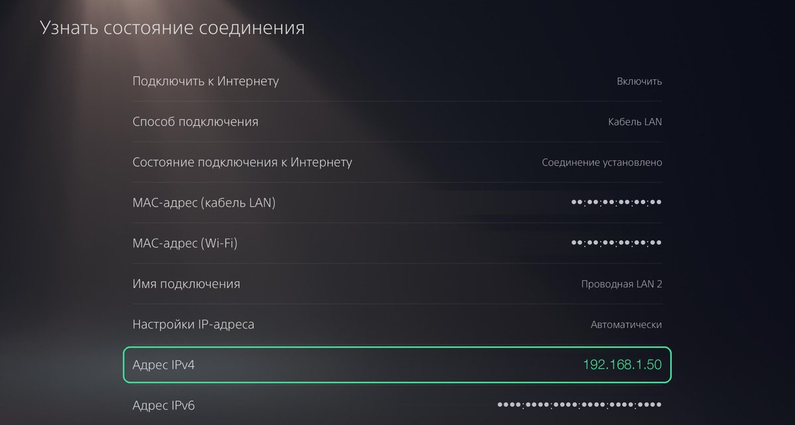

Нажмите «Проверить систему»: покажет, что на месте, а что нет.
Так бывает, когда PS5 пользуется другим DNS, а не шлюзом, например после того, как шлюз был выключен: консоль переключается на дополнительный DNS и может остаться на нём. Остановите трансляцию, выключите PS5 полностью (не режим покоя) и включите снова. Проверьте, что основной DNS на ней совпадает с карточкой «DNS для PS5». Если у роутера включён IPv6, попробуйте отключить его.
Привяжите аккаунт Twitch: Настройки › Пользователи и аккаунты › Связь с другими сервисами. Затем на PS5 нажмите «Проверить подключение к интернету». В «Проверка» строка «PS5 обращалась к этому DNS» должна быть зелёной. Если нет, PS5 не использует этот компьютер как DNS: повторите гайд «Поменять DNS на PS5».
Роутер выдал компьютеру новый адрес, и DNS на PS5 указывает в пустоту. Впишите новый основной DNS на PS5 (он показан в карточке «DNS для PS5») и перезапустите шлюз. Чтобы адрес не менялся, в роутере можно закрепить его за компьютером (по желанию).
Сначала проверьте, что картинка вообще идёт: в свойствах источника предпросмотр должен показывать игру. Если игра видна, а на сцене чёрно, выберите источник и нажмите Cmd+R, затем Cmd+F (подогнать по экрану). Если чёрно и в свойствах: выключите «Аппаратное декодирование» в свойствах источника, проверьте адрес rtmp://…:1935/ps5/game и что PS5 действительно вещает. Очень тёмные сцены игры тоже выглядят чёрными.
Компьютер медленно разрешает имена. Частая причина: VPN или виртуальный сетевой адаптер, который система пробует первым. Отключите такое ПО или в настройках OBS выберите вход по ключу трансляции.
Качество упирается в три вещи по порядку: сама трансляция PS5 (проверьте её качество на консоли), настройки кодировщика в OBS (аппаратный H.264, CBR 6000–8000 Кбит/с, ключевой кадр 2 с, 1920×1080, 60 к/с) и ваше соединение (компьютер лучше подключить кабелем; «Вид › Статистика» в OBS покажет пропущенные кадры).
Нажмите «Проверить» на главной: приложение покажет, чего не хватает. Частые причины: не задан адрес PS5, не определился адрес компьютера или порты 53 и 1935 заняты другой программой. Подробности в логах: Настройки › Расширенные › Открыть логи.
Если брандмауэр включён, он может не пускать PS5. Разрешите входящие подключения для CoreDNS и MediaMTX один раз; «Проверка» подскажет точную команду.
Настройки › Расширенные › «Установка заново» (настройки сохранятся) или «Сбросить расширенные», чтобы вернуть значения по умолчанию.
